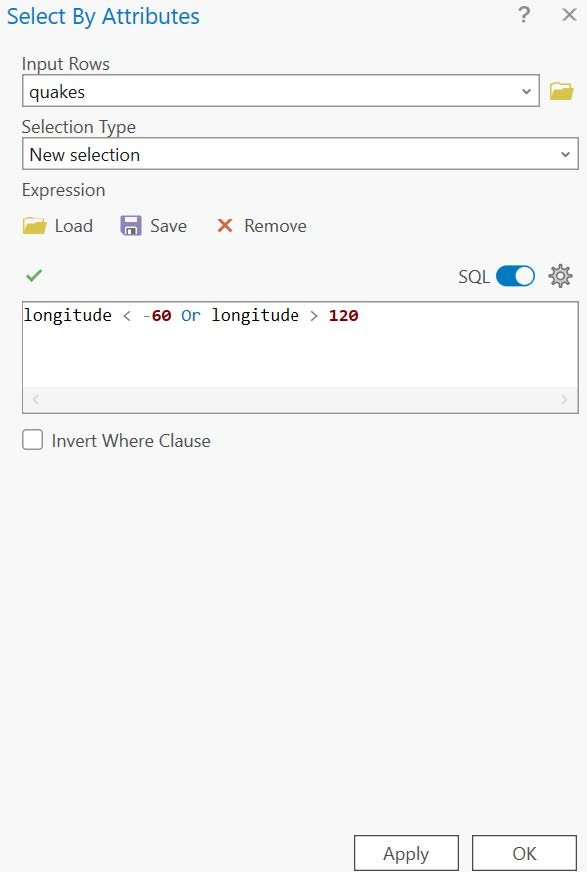
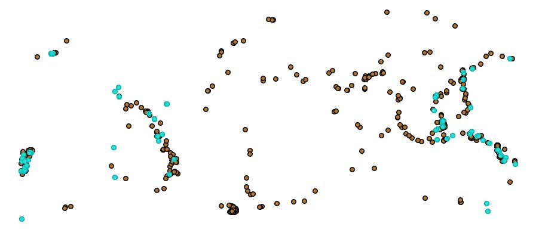
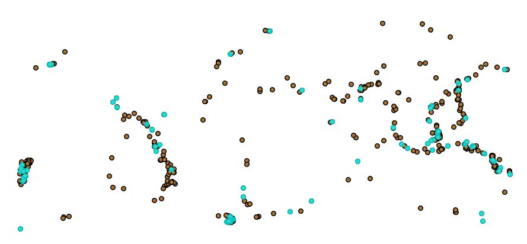
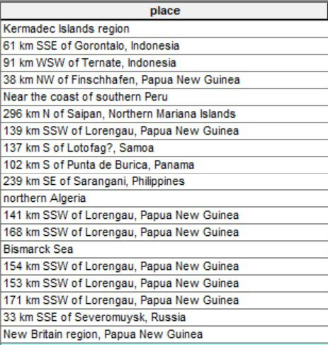
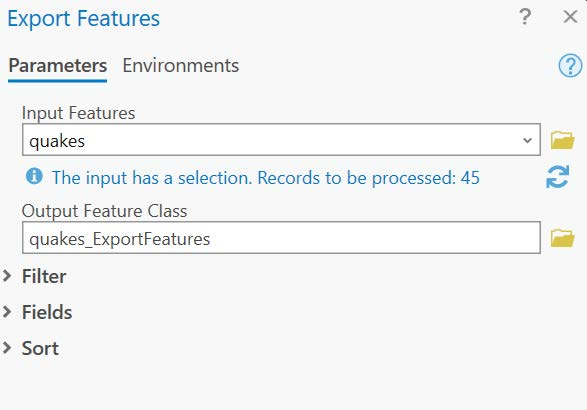

1 Asking questions with attributes
Some questions we might want to answer have to do with where particular features, or features with particular attributes, occur. For example, we may want to know where the most energy-hungry buildings are in a city, or where threatened insect species have been seen in a state park. This involves subsetting, a process of selecting a smaller set from a larger dataset based on given criteria. Here, we’ll learn how to do this kind of task by using a feature’s attribute table.
Attribute queries
A query is a statement used to extract a subset of records or features from a dataset using one or more conditions. These can be used to answer questions in ArcGIS data by selecting which features meet the conditions and which do not. Selected data are highlighted in cyan (light blue). Here we will go through several different queries using a familiar dataset.
Add the quakes dataset from the Lab2.gdb geodatabase.
Right click on quakes in the Table of Contents to open the attribute table.
Click on the Select By Attributes button.
 The following window should come up:
The following window should come up:

We saw this window in Lab 1, this allows us to query the dataset based on its attributes, which are listed in the pane at the top. The pane that starts with Where is used to construct a conditional statement with these attributes. For example, if we wanted to know which earthquakes occurred at a depth of more than 100 kms, we can enter depth, then is greater than, then enter the number 100.
Click Apply. The map should now look like this:

- Go back to the bottom pane and change the formula so that it’s asking for depth greater than 10. Click Apply. Now the map looks like this:

- We can see this selection in the attribute table as well. Open the attribute table of the quakes layer. It should show the selected quakes highlighted in cyan:

Notice that at the bottom of the window we can also see the number of earthquakes in the selection (374) out of the total number of earthquakes.
If we only want to see the selected features, click the Show selected records
 button at the bottom of the window. This hides any layers that are not selected:
button at the bottom of the window. This hides any layers that are not selected:

To get the unselected records back, click the Show all records
 button.
button.Let’s say instead of looking at the quakes deeper than 10 kms, we want quakes deeper than 50 kms. We can change our query by clicking the Select By Attributes button again. Change it to depth, is greater than, 50.
Now let’s say we’d like to know which quakes are less than 50 kms deep. We can get this quickly clicking the Switch Selection
 button:
button:

- Click the Clear Selection
 button to remove this query.
button to remove this query.
Advanced queries
Queries can be constructed using more than one condition (or clause), allowing us to get at even more specific subsets of the data. To get at these, we need to use a Boolean expression. This is a type of logical statement that evaluates as either true or false.
For example, let’s say we know that the damage caused by earthquakes is a function of both depth and magnitude. We can find a set of shallow, high magnitude quakes using the AND operator in our expression:
depth, is less than, 10
AND
mag, is greater than, 5
The result should be something like this:

- Sometimes we may want to include data from two distinct subsets within the entire dataset. In that case, we would use the OR operator. For example, let’s say from this dataset we only wanted quakes from the Pacific Ocean (which is at the far eastern and western sides of the map), we could subset using the longitude of the points: longitude is less than -60 OR longitude > 120. The result should look similar to this:

- Click the SQL switch and it should change the appearance of the window:

- The SQL query can be useful when we want to use more complex conditions. For example, if we want a subset of only Pacific Ocean earthquakes with a magnitude of 5 or greater, we can use both AND and OR. First, we contain the OR statement in parentheses (), which ensures that we do the OR operation first to get the Pacific Ocean earthquakes. To this we add an AND statement about the magnitude of those earthquakes: (longitude < -60 OR longitude > 120) AND mag > 5. This should look something like this:

Switch back to the standard query builder and click X on each of the clauses to remove them.
Create a new query and select magType. This attribute tells us which magnitude scale was used to measure the earthquake, and shows that there are four categories:
‘mb’: body-wave magnitude
‘ml’: local magnitude
‘mwr’: surface-wave magnitude
‘mmw’: moment magnitude
The body-wave magnitude method is not a very reliable indicator for larger earthquakes, so if we only wanted larger earthquakes that weren’t measured using this method, we could use the following expression:
mag is greater than 5
AND
magType does not contain the value(s) mb

- Finally, we can also use this tool to select attributes that contain some portion of a text string. For example, let’s say we wanted to get all of the quakes near Japan. There is a place attribute, but it usually contains more than just the country:

- What we’d like to do is select all of the features that have the word “Japan” in the place attribute. We can use the operator contains on this attribute to look for instances where the word Japan occurs. So the query would be place contains the text Japan. This should turn up the following map:

- We may want to convert any of these queries into a new dataset. To do this, right-click on the quakes layer in the table of contents while the Japanese earthquakes are selected and click Data, then Export Features. You should see something like this:

- Note that at the top of the window under Input Features it says The input has a selection, which means that it will only export those features that are currently selected. For the Output Feature Class, navigate to the Lab2.gdb geodatabase and save the feature as japan_quakes. Click OK. The feature is now saved in the database.